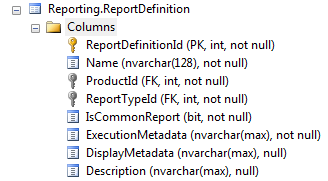

You can include a report definition in the
In order to execute and configure the display of a custom report, a record to the Reporting.ReportDefinition is necessary. The schema is as follows:

The fields in this table include:
|
Field Name |
Description |
|
ReportDefinitionId |
The auto-generated ID field for the table. |
|
Name |
The
display name of the report. This name appears on the Reports page
in the |
|
ProductId |
Refers
to the product that your report will be available to. This must
be a value from the |
|
ReportTypeId |
Refers to the report type. The reports are grouped on the Reports page by the report type. The report types are listed in the Reporting.ReportType table. |
|
RequiredPermission |
This field corresponds to the Permission that is required to see and run the report. If this field is left blank, this report will show for all users that have permissions to the Reports component. |
|
IsCommonReport |
This field determines
whether your custom report should be considered common.
A common report is displayed in the |
|
ExecutionMetadata |
Contains the metadata
needed by the system to run your report. This field must contain
valid JSON (JavaScript Object Notation). This is a complex field;
see |
|
DisplayMetadata |
Contains the metadata
that customizes the display of your report. This is a complex
field; see |
Related Topics